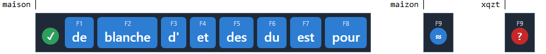
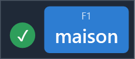
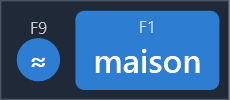
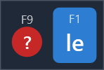

Le rond d'orthographe
À gauche des mots, un petit rond te dit si Pépite connaît ton mot.

✓ vert : mot connu
Pépite connaît ce mot. Pendant que tu tapes, le ✓ arrive dès que tes lettres forment un vrai mot.
Quand tu vois le ✓ pendant que tu tapes, ton mot est aussi dans la barre : tu peux le choisir.

≈ bleu : s'écrit peut-être autrement
Ton mot n'existe pas comme ça, mais un mot connu a le même son. Exemple : tu as écrit « maizon ».
Clique sur le rond, ou appuie sur F9. Pépite te montre les mots qui se prononcent pareil.
Deux mots collés aussi : lécole
≈ l'école
, jai
≈ j'ai
.
La liste est rangée selon les mots d'avant : après je
, t'aime
vient en premier ; après le
, c'est thème
.

Choisis le bon mot : Pépite corrige ton mot. Dans quelques programmes, il l'écrit à l'endroit du curseur : efface alors l'ancien mot.
? rouge : mot inconnu
Pépite ne connaît pas ce mot. Ce n'est pas forcément une faute : c'est peut-être un mot rare, ou un nom.
Clique sur le rond, ou appuie sur F9. Pépite demande Ajouter « … » à mes mots ?
Réponds Oui ou Non.

Il n'y a jamais de croix. Le rond t'aide, il ne te note pas. Et rien de ce que tu écris n'est enregistré.
Quand le rond apparaît
- Pendant que tu tapes : seulement le ✓ vert.
- Quand tu finis un mot (espace, virgule, Entrée) : ✓, ≈ ou ?.
- Juste après . ou :, seulement le ✓, jusqu'à l'espace ou au retour à la ligne suivant : ce pourrait être une adresse Internet.
- Pas de rond pour une seule lettre, un nombre ou un nom avec une majuscule que Pépite ne connaît pas.
Pour l'enlever : Réglages…, onglet Mots, case Indicateur d'orthographe. Voir les réglages.
À l'école, Pépite peut demander le code de ton enseignant.